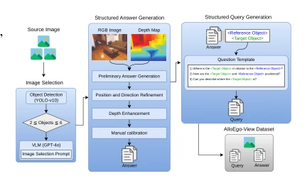
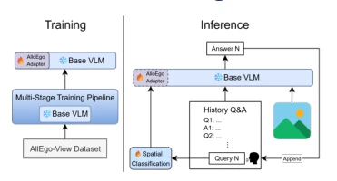
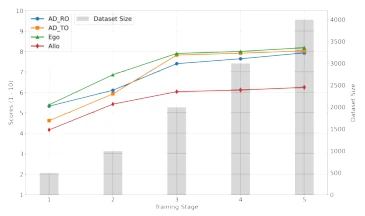
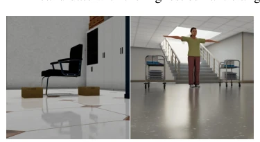
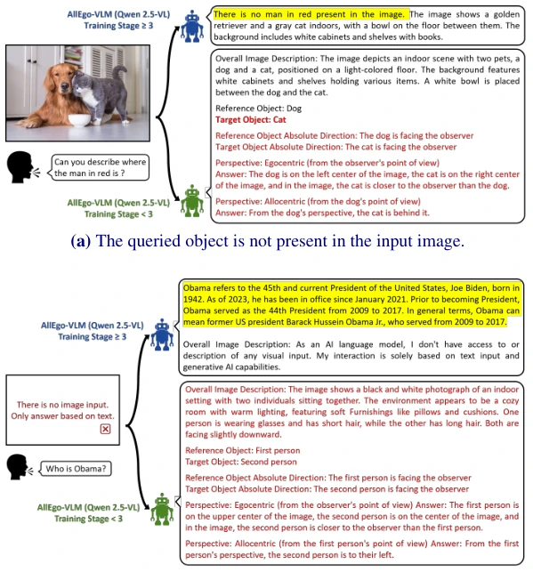

This paper equips VLMs with a "spatial compass", attempting to solve the century-old problem of "not distinguishing left from right". Authors find that mainstream models like GPT-4o easily default to the observer perspective under ambiguous instructions, leading to embodied robot navigation failures. AlloEgo-VLM, through structured data and fine-tuning, indeed improves reference frame disambiguation capability; navigation success rate in Isaac Sim is significantly higher than the baseline. However, limitations are obvious: the dataset is bootstrapped, scale is small; facing complex human poses (Case 5) it still struggles, indicating reference frame conversion is not yet fully robust. It counts as filling a shortcoming for VLMs, but still far from general embodied intelligence; do not expect it to switch perspectives instantly like humans. Its lightweight design is suitable for deployment, but generalization still needs verification.
"The plant on the right of the sofa" in natural language has serious ambiguity, depending on whether the reference frame is observer (egocentric) or object itself (allocentric). Existing VLMs like LLaVA or GPT-4o lack explicit reference frame training, often default to observer perspective, leading to high spatial reasoning error rates [37]. Existing datasets like ViewSpatial-Bench [18] require users to explicitly specify the view, not conforming to real interaction scenarios. This paper points out 71% of spatial errors stem from this [37], and existing methods cannot handle natural queries without explicit prompts, models urgently need automatic disambiguation capability. This directly relates to the safety and reliability of embodied intelligence.
Overall adopts a "Data Construction + Adapter Fine-tuning + Query Classification" framework. First construct AlloEgo-View dataset, generate structured answers containing absolute direction, depth ordering via GPT-4o, and manually calibrated. Model based on Qwen 2.5-VL and other backbones, introduces AlloEgo-Adapter and Spatial Query Classifier. Training divided into multiple stages: first use 0.5K data QLoRA fine-tune Adapter, then use model to generate new data to expand to 4K, iterate 5 rounds. During inference, Classifier judges whether query involves space; if yes, activate Adapter for structured reasoning, otherwise direct response. Additionally, Structured Answer contains global context, absolute direction, object position, depth ordering, etc., ensuring view consistency. Classifier uses DistilBERT lightweight classification, ensuring inference efficiency. Through multi-stage iteration, model gradually learns to handle ambiguous instructions, avoiding hallucinations.

Figure 2: AlloEgo-View data curation pipeline. Each triplet consists of an image, a natural but potentially am- biguous query, and an answer that provides detailed ego- centric and allocentric view descriptions.

Figure 4: AlloEgo-VLM Framework.
实验Experiments
在 AlloEgo-View 测试集上，AlloEgo-VLM 的 VSA 指标显著优于 GPT-4o（80%+ vs 66%）。Isaac Sim 导航任务中，模糊查询下平均成功率 0.783，优于 Qwen-For (0.567)。消融显示多阶段训练有效，数据扩充后性能稳定。但在人体场景（Case 5）和侧视椅子（Case 4）表现下降，表明复杂几何和遮挡仍是挑战。此外，训练后期出现检测缺失物体的 emergent capability。对比 GPT-4o mini 和 Llama 3.2-V，本方法在 7B 参数下表现更优，证明了结构化微调的有效性。
On the AlloEgo-View test set, AlloEgo-VLM's VSA metric significantly outperforms GPT-4o (80%+ vs 66%). In Isaac Sim navigation task, under ambiguous queries average success rate 0.783, better than Qwen-For (0.567). Ablation shows multi-stage training effective, performance stable after data expansion. But performance drops in human scenes (Case 5) and side-view chairs (Case 4), indicating complex geometry and occlusion remain challenges. Additionally, emergent capability of detecting missing objects appears in later training stages. Compared to GPT-4o mini and Llama 3.2-V, this method performs better at 7B parameters, proving the effectiveness of structured fine-tuning.

Figure 8: Progressive training of AlloEgo- Adapter on Qwen 2.5-VL-7B. Line: perfor- mance; bars: dataset size.

Figure 9: Example multi-object scenarios in Isaac Sim for embodied object search tasks. Boxes are positioned in front of and behind the chair (left), while carts are placed on both sides of the human avatar (right).

Figure 10: Examples of emergent reasoning in AlloEgo-VLM (with Qwen2.5-VL as the backbone). Behaviors after and before training stage 3 are shown.